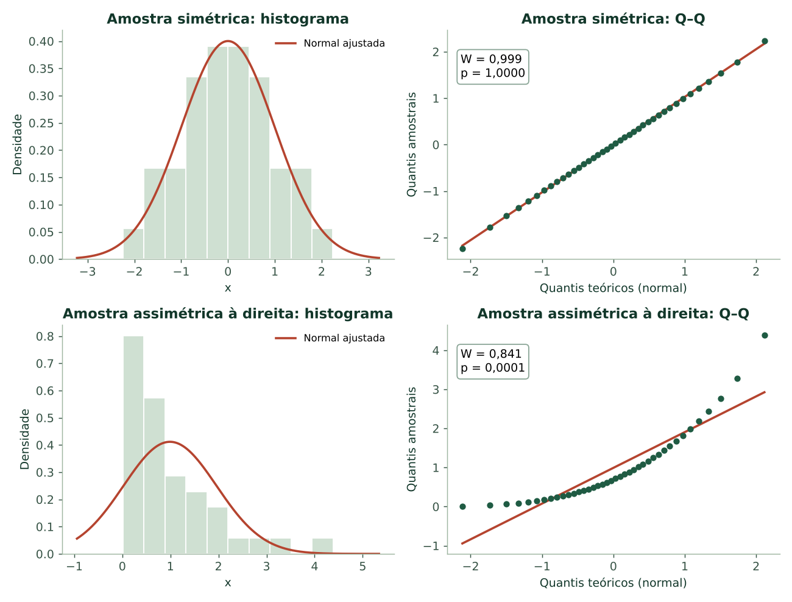
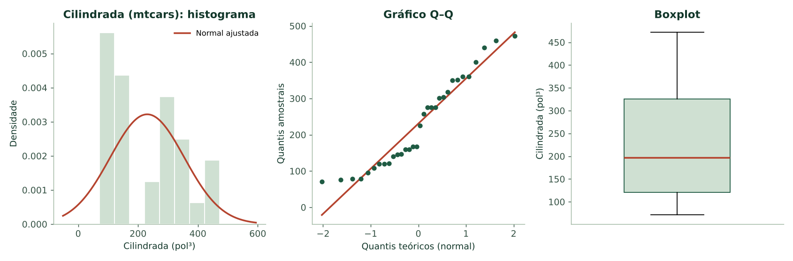
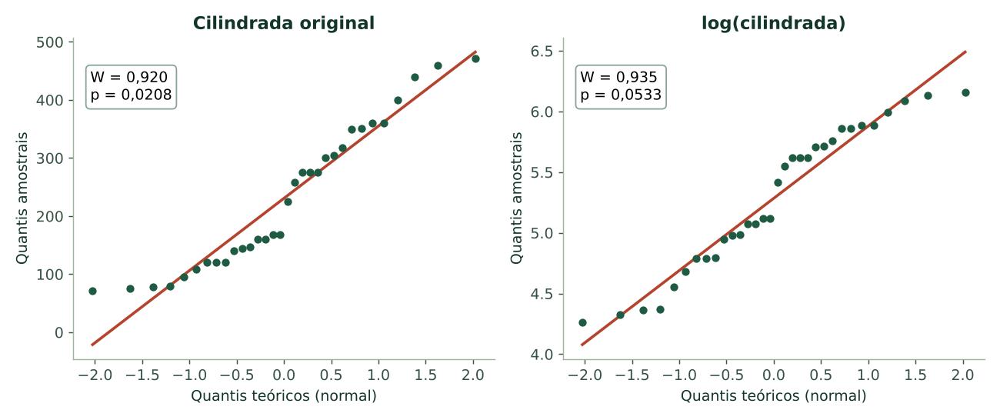

Shapiro–Wilk
Verifica se os dados apresentam desvios significativos da distribuição normal, e mostra como ler o resultado junto com o gráfico Q–Q.
Comece por aqui
Antes de aplicar qualquer teste que assuma uma curva em forma de sino, vale perguntar: os dados se comportam como uma normal? O Shapiro–Wilk é a ferramenta mais usada para responder a essa pergunta. Nesta ficha você vai entender a lógica do teste, calcular a estatística à mão em um exemplo pequeno, executar tudo no R ou em Python e aprender a ler o resultado sem cair nas armadilhas mais comuns.
Quando usar
| Situação | Faz sentido? |
|---|---|
| Verificar se a variável pode ser tratada como normal (n entre 10 e 2000) | Sim. |
| Checar a normalidade dos resíduos de uma regressão ou ANOVA | Sim. |
O que é o teste
O teste de Shapiro–Wilk é um teste de hipóteses de aderência (goodness-of-fit) proposto por Samuel S. Shapiro e Martin B. Wilk em 1965. Ele responde a uma única pergunta: é razoável supor que esta amostra foi extraída de uma população com distribuição normal?
A ideia central é comparar os dados ordenados com os valores que seriam esperados, na mesma posição, em uma amostra normal. Se os pontos acompanham essa referência, a estatística fica próxima de 1; se há assimetria, caudas pesadas, truncamento ou valores extremos, ela diminui. Em essência, o teste mede, em um único número, o que o gráfico Q–Q mostra visualmente: a proximidade dos pontos a uma reta.

qnorm(ppoints(40)) e qexp(ppoints(40)). Fonte: o autor.Não prova normalidade, não indica qual é a distribuição correta quando rejeita, não verifica independência e não substitui a inspeção gráfica. É um diagnóstico entre vários.
Pressupostos e como verificá-los
| Pressuposto | Por que importa | Como verificar |
|---|---|---|
| Dados quantitativos (contínuos ou quase) | A distribuição nula de W foi deduzida para variáveis contínuas. | Observe o tipo da variável e a quantidade de valores repetidos: length(unique(x)) / length(x). |
| Observações independentes | Dependência altera a variabilidade real e gera rejeições sem relação com a forma da distribuição. | Avalie o delineamento: medidas repetidas, agrupamentos e séries temporais violam o pressuposto. Para séries, use acf(x). |
| Poucos empates | Empates distorcem o valor-p; o R avisa com may not be accurate. | anyDuplicated(x) e table(x). |
| 3 ≤ n ≤ 5000 no R | Faixa de validade da aproximação de Royston. | length(x). |
| Variável correta | Em regressão e ANOVA, a normalidade exigida é a dos erros. | Ajuste o modelo e teste residuals(modelo). |
Faça histograma e Q–Q. O Q–Q mostra onde está o desvio: curva em S indica caudas diferentes da normal; curva em J indica assimetria; degraus indicam dados discretos. O valor-p diz que existe desvio; o gráfico diz qual.
Hipóteses e estatística de teste
Hipóteses
A hipótese nula é composta: não fixa \(\mu\) nem \(\sigma^2\), que são estimados pela amostra. Por isso a distribuição de \(W\) sob \(H_0\) depende apenas de \(n\). O teste é sempre unilateral à esquerda: rejeita-se \(H_0\) para valores pequenos de \(W\).
Estatística de teste
Em que:
- \(W\)
- estatística do teste, entre 0 e 1
- \(n\)
- número de observações
- \(x_{(i)}\)
- i-ésima observação em ordem crescente (estatística de ordem)
- \(x_i\)
- i-ésima observação original
- \(\bar x\)
- média amostral
- \(a_i\)
- coeficientes que dependem só de \(n\), calculados como \(\mathbf a=\mathbf m^\top\mathbf V^{-1}/(\mathbf m^\top\mathbf V^{-1}\mathbf V^{-1}\mathbf m)^{1/2}\), em que \(\mathbf m\) é o vetor de valores esperados e \(\mathbf V\) a matriz de covariâncias das estatísticas de ordem de uma normal padrão
- \(b\)
- numerador (sem o quadrado): soma ponderada das diferenças entre pares simétricos
- \(S^2\)
- soma de quadrados total em torno da média
Exemplo numérico, passo a passo
Considere \(n=6\) medidas ordenadas: 2,1; 2,8; 3,0; 3,4; 3,9; 4,0. Os coeficientes tabulados por Shapiro e Wilk para \(n=6\) são \(a_1=0{,}6431\), \(a_2=0{,}2806\) e \(a_3=0{,}0875\).
| i | x(i) | x(n+1−i) | Diferença | a | a × diferença |
|---|---|---|---|---|---|
| 1 | 2,1 | 4,0 | 1,9 | 0,6431 | 1,2219 |
| 2 | 2,8 | 3,9 | 1,1 | 0,2806 | 0,3087 |
| 3 | 3,0 | 3,4 | 0,4 | 0,0875 | 0,0350 |
\(b=1{,}2219+0{,}3087+0{,}0350=1{,}5656\) e \(b^2=2,4509\).
A média é \(\bar x=3{,}2\) e \[\begin{aligned}S^2 &= (-1{,}1)^2+(-0{,}4)^2 \\ &\quad +(-0{,}2)^2+0{,}2^2+0{,}7^2 \\ &\quad +0{,}8^2 \\ &= 2,58.\end{aligned}\]
\(W=2{,}4509/2{,}58\approx0,950\). O cálculo computacional retorna 0,9502; a diferença vem do arredondamento dos coeficientes tabulados. Com \(p=0,742\), não há evidência contra a normalidade (e, com n = 6, o poder é muito baixo).
Propriedades de W
- \(0<W\leq 1\); valores próximos de 1 indicam bom ajuste à normal.
- Os coeficientes satisfazem \(\sum a_i^2=1\) e \(a_i=-a_{n+1-i}\) (antissimetria).
- \(W\) é invariante a mudanças de locação e escala: multiplicar os dados por uma constante ou somar outra não altera o resultado.
- \(W\) é, essencialmente, o quadrado do coeficiente de correlação entre os dados ordenados e os escores normais esperados, ou seja, mede a linearidade do Q–Q.
Como o valor-p é obtido
Shapiro e Wilk tabularam pontos críticos exatos para \(3\leq n\leq 50\). Royston (1982; 1995) estendeu o procedimento até \(n=5000\): para \(n\geq 12\), a transformação \(\ln(1-W)\) é aproximadamente normal, com média e desvio-padrão modelados como funções de \(\ln n\).
Em que:
- \(\mu_n\)
- \[\begin{aligned}&0{,}0038915(\ln n)^3-0{,}083751(\ln n)^2 \\ &\quad -0{,}31082\ln n-1{,}5861\end{aligned}\]
- \(\sigma_n\)
- \[\begin{aligned}&\exp\{0{,}0030302(\ln n)^2 \\ &\quad -0{,}082676\ln n-0{,}4803\}\end{aligned}\]
- \(\Phi\)
- função de distribuição acumulada da normal padrão
\(\ln 32=3{,}4657\) ⇒ \(\mu_n=-3{,}5073\) e \(\sigma_n=0{,}4817\).
\(\ln(1-0{,}9200)=-2{,}5259\) ⇒ \(Z=(-2{,}5259+3{,}5073)/0{,}4817=2{,}037\).
\(p=1-\Phi(2{,}037)=0{,}0208\), idêntico ao valor obtido computacionalmente.
Não existe intervalo de confiança usual para \(W\): é uma estatística de teste, não um parâmetro populacional. A magnitude do desvio deve ser avaliada por \(W\), assimetria, curtose e pelo gráfico.
Como interpretar os resultados
| Resultado | Leitura correta | O que NÃO concluir |
|---|---|---|
| p < 0,05 | Há evidência de que a distribuição não é normal. | Que o desvio seja grande ou relevante para a sua análise. |
| p ≥ 0,05 | Não há evidência suficiente contra a normalidade. | Que os dados sejam normais (ausência de evidência não é evidência de ausência). |
| W próximo de 1 e p pequeno (n grande) | Desvio estatisticamente detectável, porém pequeno. | Que seja necessário abandonar os métodos paramétricos. |
| W afastado de 1 (por exemplo, 0,85) | Desvio substancial; investigue assimetria e outliers. | Que uma única transformação resolva sem avaliar o Q–Q. |
Como reportar: informe sempre n, W e valor-p juntos, por exemplo: “n = 32, W = 0,920, p = 0,021”, acompanhados do gráfico Q–Q.
O efeito do tamanho da amostra
| Situação | O que acontece | Conduta recomendada |
|---|---|---|
| n pequeno (< 20) | Poder baixo: quase nunca rejeita, mesmo com assimetria clara. | Não use p como atestado de normalidade; decida pelo desenho e pelo gráfico. |
| n moderado (20 a 200) | Faixa em que o teste é mais útil como diagnóstico. | Reporte W e p com o Q–Q e avalie assimetria e curtose. |
| n grande (> 1000) | Detecta desvios irrelevantes (ex.: W = 0,998 com p = 0,003). | Priorize a magnitude e o gráfico; pelo teorema central do limite, a inferência sobre médias é robusta. |
Como executar no R e em Python
Se você nunca usou o R, comece instalando os dois programas abaixo, nesta ordem. O R é a linguagem; o RStudio é a janela confortável onde você escreve e executa o código.
Onde executar o código em Python
Não é preciso instalar nada: o Google Colab é um computador na nuvem, gratuito, que executa Python pelo navegador e já traz as bibliotecas usadas aqui (numpy, scipy e matplotlib).
- No R: abra o RStudio e crie um script: File → New File → R Script.
- Cole o código abaixo e selecione as linhas desejadas.
- Pressione Ctrl+Enter (ou Cmd+Enter no macOS) para executar.
shapiro.test() pertence ao pacote stats, que já vem instalado e carregado com o R. Não é preciso install.packages().
Bloco mínimo
x <- c(2.1, 3.4, 2.8, 4.0, 3.1, 2.5, 3.9, 2.2, 3.6, 3.0)
qqnorm(x, pch = 19); qqline(x, col = "red", lwd = 2)
shapiro.test(x)
Resíduos de um modelo
Em regressão linear e ANOVA, o que precisa ser aproximadamente normal são os erros. Ajuste o modelo primeiro e teste os resíduos.
# Normalidade dos resíduos de um modelo ----
modelo <- lm(mpg ~ wt + hp, data = mtcars)
shapiro.test(residuals(modelo))
plot(modelo, which = 2) # Q-Q dos resíduos padronizados
Conferindo o cálculo manual
# Conferindo o cálculo manual (n = 6) ----
y <- c(2.1, 2.8, 3.0, 3.4, 3.9, 4.0)
shapiro.test(y)
Se aparecer may not be accurate, há empates (escala discreta ou arredondamento). Se aparecer erro de tamanho, o vetor está fora de 3 ≤ n ≤ 5000. Ambos informam sobre a validade do teste.
Exemplo de aplicação
Contexto dos dados
O conjunto mtcars (HENDERSON; VELLEMAN, 1981) reúne 11 características de 32 modelos de automóveis. A variável disp é a cilindrada do motor, em polegadas cúbicas.
Objetivo
Verificar se é razoável representar a distribuição da cilindrada por uma normal e, se não for, entender o porquê.
Código em R
# Shapiro–Wilk: exemplo completo ----
# Pacote: apenas o stats (já vem com o R). Dados: mtcars (já vem com o R).
# 1. Dados
x <- mtcars$disp # cilindrada de 32 automóveis (pol³)
# 2. Estatísticas descritivas
summary(x)
sd(x)
length(x)
# 3. Diagnóstico gráfico (sempre antes do teste)
par(mfrow = c(1, 3))
hist(x, breaks = "FD", freq = FALSE, col = "gray85", border = "white",
main = "Histograma", xlab = "Cilindrada (pol³)")
curve(dnorm(x, mean(x), sd(x)), add = TRUE, col = "red", lwd = 2)
qqnorm(x, pch = 19, main = "Gráfico Q-Q"); qqline(x, col = "red", lwd = 2)
boxplot(x, main = "Boxplot", ylab = "Cilindrada (pol³)")
par(mfrow = c(1, 1))
# 4. Teste
resultado <- shapiro.test(x)
print(resultado)
# 5. Decisão (nível de significância de 5%)
cat(ifelse(resultado$p.value < 0.05,
"Evidência contra normalidade",
"Sem evidência suficiente contra normalidade"), "\n")
# 6. Efeito de uma transformação logarítmica
shapiro.test(log(x))
# 7. Assimetria e curtose amostrais (para julgar a magnitude do desvio)
m <- mean(x); s <- sd(x); n <- length(x)
assimetria <- sum((x - m)^3) / n / (sum((x - m)^2) / n)^(3/2)
assimetria
A mesma análise em Python, com os resultados
Cole o código em um notebook do Google Colab ↗ e execute com Shift+Enter. Os valores abaixo são a saída desse código.
# Bibliotecas: numpy, scipy e matplotlib (já instaladas no Google Colab)
import numpy as np
from scipy import stats
import matplotlib.pyplot as plt
# Dados do conjunto mtcars (32 automóveis); disp = cilindrada em pol³
mpg = np.array([21, 21, 22.8, 21.4, 18.7, 18.1, 14.3, 24.4, 22.8, 19.2, 17.8, 16.4, 17.3, 15.2, 10.4, 10.4, 14.7, 32.4, 30.4, 33.9, 21.5, 15.5, 15.2, 13.3, 19.2, 27.3, 26, 30.4, 15.8, 19.7, 15, 21.4])
cyl = np.array([6, 6, 4, 6, 8, 6, 8, 4, 4, 6, 6, 8, 8, 8, 8, 8, 8, 4, 4, 4, 4, 8, 8, 8, 8, 4, 4, 4, 8, 6, 8, 4])
disp = np.array([160, 160, 108, 258, 360, 225, 360, 146.7, 140.8, 167.6, 167.6, 275.8, 275.8, 275.8, 472, 460, 440, 78.7, 75.7, 71.1, 120.1, 318, 304, 350, 400, 79, 120.3, 95.1, 351, 145, 301, 121])
x = disp
n = len(x)
# 1. Estatísticas descritivas
q = np.percentile(x, [0, 25, 50, 75, 100])
print("Mín, Q1, Mediana, Q3, Máx:", np.round(q, 2))
print("Média:", round(x.mean(), 2), "| DP:", round(x.std(ddof=1), 4), "| n:", n)
# 2. Diagnóstico gráfico (sempre antes do teste)
fig, ax = plt.subplots(1, 3, figsize=(13, 4))
ax[0].hist(x, bins=8, density=True, color="lightgray", edgecolor="white")
t = np.linspace(x.min(), x.max(), 200)
ax[0].plot(t, stats.norm.pdf(t, x.mean(), x.std(ddof=1)), color="red")
ax[0].set_title("Histograma")
stats.probplot(x, dist="norm", plot=ax[1]); ax[1].set_title("Gráfico Q-Q")
ax[2].boxplot(x); ax[2].set_title("Boxplot")
plt.show()
# 3. Teste de Shapiro–Wilk
W, p = stats.shapiro(x)
print(f"\nShapiro-Wilk: W = {W:.5f}, p-valor = {p:.5f}")
print("Evidência contra normalidade" if p < 0.05 else "Sem evidência suficiente contra normalidade")
# 4. Transformação logarítmica
W2, p2 = stats.shapiro(np.log(x))
print(f"log(x): W = {W2:.5f}, p-valor = {p2:.5f}")
# 5. Assimetria populacional e amostral
m = x.mean()
assim = np.sum((x - m)**3) / n / (np.sum((x - m)**2) / n)**1.5
print("Assimetria (populacional):", round(assim, 4), "| (amostral):", round(stats.skew(x, bias=False), 4))
# 6. Exemplo manual com n = 6 (coeficientes a_i tabulados por Shapiro e Wilk)
y = np.array([2.1, 2.8, 3.0, 3.4, 3.9, 4.0])
a = np.array([0.6431, 0.2806, 0.0875])
b = sum(a[i] * (y[5 - i] - y[i]) for i in range(3))
S2 = np.sum((y - y.mean())**2)
print(f"\nManual: b = {b:.4f}, b² = {b**2:.4f}, S² = {S2:.2f}, W ≈ {b**2 / S2:.4f}")
Wy, py = stats.shapiro(y)
print(f"scipy: W = {Wy:.4f}, p-valor = {py:.4f}")
# 7. Valor-p pela aproximação de Royston (n >= 12), para conferência
ln = np.log(n)
mu = 0.0038915*ln**3 - 0.083751*ln**2 - 0.31082*ln - 1.5861
sg = np.exp(0.0030302*ln**2 - 0.082676*ln - 0.4803)
z = (np.log(1 - W) - mu) / sg
print(f"\nRoyston: mu = {mu:.4f}, sigma = {sg:.4f}, Z = {z:.3f}, p = {1 - stats.norm.cdf(z):.4f}")
Resultados da execução
Mín, Q1, Mediana, Q3, Máx: [ 71.1 120.82 196.3 326. 472. ] Média: 230.72 | DP: 123.9387 | n: 32 Shapiro-Wilk: W = 0.92001, p-valor = 0.02081 Evidência contra normalidade log(x): W = 0.93477, p-valor = 0.05327 Assimetria (populacional): 0.4003 | (amostral): 0.4202 Manual: b = 1.5655, b² = 2.4509, S² = 2.58, W ≈ 0.9500 scipy: W = 0.9502, p-valor = 0.7419 Royston: mu = -3.5073, sigma = 0.4817, Z = 2.037, p = 0.0208


Leitura detalhada
| Elemento | Valor | Leitura |
|---|---|---|
| n | 32 | Faixa em que o teste é confiável e razoavelmente potente. |
| W | 0,9200 | Afastamento moderado, não extremo, da normalidade. |
| Valor-p | 0,0208 | Menor que 0,05: rejeita-se H₀ ao nível de 5%. |
| Média / mediana | 230,7 / 196,3 | Média acima da mediana: assimetria à direita. |
| Assimetria | 0,40 (populacional) / 0,42 (amostral) | Cauda superior mais longa. |
A rejeição é real, mas o desvio não é dramático: os valores centrais ficam próximos da reta e a cauda superior é puxada pelos motores de maior cilindrada (por exemplo, Cadillac Fleetwood, Lincoln Continental e Chrysler Imperial, com mais de 400 pol³). Para descrever a distribuição, o histograma já basta. Para comparar médias entre grupos com esses dados, a transformação logarítmica, um teste não paramétrico ou bootstrap são escolhas defensáveis, não porque o valor-p mandou, mas porque o gráfico mostrou o tipo de assimetria.
O código é uma sugestão de aplicação e deve ser adaptado aos dados e ao objetivo de cada estudo.
Erros comuns
| Erro | Por que é um problema | Como evitar |
|---|---|---|
| Usar como “porteiro” (p > 0,05 ⇒ teste t; senão, Mann–Whitney) | A escolha pelo resultado dos dados altera a taxa de erro tipo I. | Decida o método pelo desenho do estudo e pelo que se quer estimar. |
| Ignorar a magnitude | W = 0,998 e W = 0,85 rejeitam, mas pedem condutas diferentes. | Reporte W e examine o Q–Q. |
| Tratar p alto como prova | Com n = 8, p = 0,40 é esperado até em dados assimétricos. | Declare o poder limitado. |
| Testar dados discretos | Likert, contagens e proporções violam a continuidade. | Use métodos para dados ordinais ou discretos. |
| Deixar um outlier decidir | Um ponto pode derrubar W. | Investigue o ponto e compare com e sem ele. |
| Desconsiderar a dependência | Medidas repetidas e séries invalidam o teste. | Modele a dependência (modelos mistos, séries temporais). |
| Testar a variável errada | A normalidade exigida é a dos resíduos. | shapiro.test(residuals(modelo)). |
Alternativas e fluxo de trabalho
| Teste | Base | Quando preferir |
|---|---|---|
| Shapiro–Wilk | Combinação linear das estatísticas de ordem | Padrão para n pequeno e médio; maior poder geral. |
| Shapiro–Francia | Correlação com escores normais | Alternativa leve para 5 ≤ n ≤ 5000 (pacote nortest). |
| Anderson–Darling | Distância entre distribuições, com peso nas caudas | Interesse nas caudas e n grande. |
| Kolmogorov–Smirnov (Lilliefors) | Distância máxima entre distribuições acumuladas | Parâmetros estimados da amostra; menos potente que SW e AD. |
| D’Agostino–Pearson | Assimetria e curtose | Amostras médias a grandes, com leitura em termos de forma. |
| Jarque–Bera | Assimetria e curtose (assintótico) | n grande, comum em econometria. |
Fluxo de trabalho recomendado
- Decida antes se a normalidade importa para o que você fará (para médias com n grande, o teorema central do limite ajuda).
- Faça o diagnóstico gráfico: histograma, boxplot e Q–Q.
- Rode o teste e reporte n, W e p.
- Julgue a magnitude (assimetria, curtose, distância dos pontos à reta).
- Se rejeitar: transformação (log, raiz, Box–Cox), método não paramétrico, bootstrap ou modelo com outra distribuição.
- Se não rejeitar com n pequeno, registre que o poder era limitado.
Trate o Shapiro–Wilk como um segundo par de olhos sobre o gráfico Q–Q, não como um juiz que decide qual teste você pode usar.
Referências desta ficha
- SHAPIRO, Samuel S.; WILK, Martin B. An analysis of variance test for normality (complete samples). Biometrika, v. 52, n. 3-4, p. 591-611, 1965. DOI: 10.1093/biomet/52.3-4.591.
- ROYSTON, J. Patrick. An extension of Shapiro and Wilk’s W test for normality to large samples. Applied Statistics, v. 31, n. 2, p. 115-124, 1982.
- ROYSTON, Patrick. Remark AS R94: a remark on algorithm AS 181: the W-test for normality. Journal of the Royal Statistical Society: Series C, v. 44, n. 4, p. 547-551, 1995.
- RAZALI, Nornadiah Mohd; WAH, Yap Bee. Power comparisons of Shapiro-Wilk, Kolmogorov-Smirnov, Lilliefors and Anderson-Darling tests. Journal of Statistical Modeling and Analytics, v. 2, n. 1, p. 21-33, 2011.
- GROSS, Juergen; LIGGES, Uwe. nortest: tests for normality. R package, versão 1.0-4, 2015. Disponível em: https://CRAN.R-project.org/package=nortest.
- HENDERSON, Harold V.; VELLEMAN, Paul F. Building multiple regression models interactively. Biometrics, v. 37, n. 2, p. 391-411, 1981. (Conjunto de dados
mtcars, pacotedatasetsdo R.) - R CORE TEAM. R: a language and environment for statistical computing. Vienna: R Foundation for Statistical Computing, 2026. Disponível em: https://www.r-project.org/.
- POSIT TEAM. RStudio: integrated development environment for R. Boston: Posit Software, PBC. Disponível em: https://posit.co/download/rstudio-desktop/.
- VIRTANEN, Pauli et al. SciPy 1.0: fundamental algorithms for scientific computing in Python. Nature Methods, v. 17, p. 261-272, 2020. DOI: 10.1038/s41592-019-0686-2. (Funções do módulo
scipy.stats.) - HARRIS, Charles R. et al. Array programming with NumPy. Nature, v. 585, p. 357-362, 2020. DOI: 10.1038/s41586-020-2649-2.
- HUNTER, John D. Matplotlib: a 2D graphics environment. Computing in Science & Engineering, v. 9, n. 3, p. 90-95, 2007.
- GOOGLE. Google Colaboratory. Disponível em: https://colab.research.google.com/.
- As figuras desta ficha foram elaboradas pelo autor com os dados do exemplo e com amostras determinísticas (quantis).

Prof. Dr. Cássius Henrique Xavier Oliveira
Professor · ICTIN/UFLA · Estatística, Confiabilidade e Ciência de Dados.
Conheça minha trajetória e projetos →